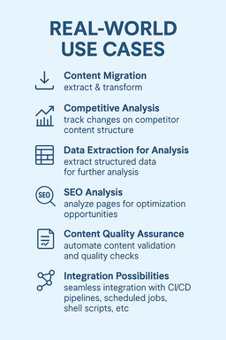

Інструменти аналізу веб-сторінок: Ваше комплексне рішення для веб-контент-аналітики
Змініть підхід до веб-даних — вилучайте, аналізуйте та автоматизуйте як профі

Універсальний інструмент аналізу веб-сторінок для автоматизованого вилучення даних, трансформації, порівняння та SEO-аналізу. Обробляє динамічний контент за допомогою headless-браузерів та виводить результати у форматах JSON, CSV або кастомних форматах.
Стомилися від ручної роботи з веб-контентом, що поглинає дорогоцінний час та ресурси?
Ви можете революціонізувати свій підхід до обробки веб-контенту за допомогою професійних інструментів аналізу, розроблених спеціально для ваших потреб. Незалежно від того, чи вилучаєте ви дані для маркетингових досліджень, відстежуєте конкурентів, мігруєте контент або проводите SEO-аналіз — ці кастомні рішення автоматизують складні завдання.
Що таке інструменти аналізу веб-сторінок?
Інструменти аналізу веб-сторінок — це складні додатки командного рядка, побудовані для вирішення складнощів сучасного вилучення та аналізу веб-контенту. Ці інструменти поєднують потужність передових бібліотек веб-скрейпінгу, технологію headless-браузерів та інтелектуальні алгоритми аналізу.
Основні можливості
Розширена обробка веб-контенту:
- Статичний та динамічний контент — Вилучення як з традиційного HTML, так і з JavaScript-рендерованих веб-сайтів
- Точне націлювання — Використання CSS-селекторів для точного захоплення даних
- Декілька форматів виводу — JSON, CSV, Markdown, Excel та кастомні формати
- Міжнародна підтримка — Бездоганна обробка символів UTF-8 та глобального контенту
- Інтелектуальний аналіз — Надійний аналіз DOM з відновленням після помилок
Функції професійного рівня:
- Підтримка headless-браузерів — Обробка складних JavaScript-важких веб-сайтів
- Обробка автентифікації — Доступ до захищеного контенту та контенту з необхідністю входу
- Інтеграція проксі — Підтримка геолокації та можливості прихованої роботи
- Пакетна обробка — Паралельний скрейпінг для великих обсягів операцій
- Відновлення після помилок — Надійна обробка з детальним логуванням та механізмами повторення
Що можна досягти
Для аналітиків даних та дослідників
- Збір ринкової розвідки — Вилучення цін конкурентів, даних про продукти та ринкових тенденцій
- Генерація лідів — Збір контактної інформації та ділових деталей з каталогів
- Агрегація контенту — Збір новинних статей, блог-постів та галузевих інсайтів
- Збір даних опитувань — Вилучення публічних відгуків, рейтингів та зворотного зв’язку
Для бізнесу та маркетингових команд
- Моніторинг конкурентів — Відстеження змін цін, запусків продуктів та маркетингових кампаній
- SEO-аналіз — Комплексні аудити веб-сайтів та оптимізаційні інсайти
- Міграція контенту — Безшовне переміщення контенту між платформами та системами
- Моніторинг бренду — Відстеження згадок, відгуків та онлайн-репутації
Для розробників та технічних команд
- Альтернатива API — Вилучення даних з веб-сайтів без офіційних API
- Забезпечення якості — Порівняння проміжних та виробничих середовищ
- Рішення для інтеграції — З’єднання веб-даних з вашими існуючими системами
- Автоматизація робочих процесів — Планування та автоматизація повторюваних завдань збору даних
Для e-commerce та роздрібної торгівлі
- Моніторинг цін — Відстеження цін конкурентів та ринкового позиціонування
- Дослідження продуктів — Збір специфікацій, відгуків та даних про наявність
- Відстеження запасів — Моніторинг рівнів запасів на декількох платформах
- Аналіз відгуків клієнтів — Аналіз відгуків та закономірностей зворотного зв’язку
Комплексні функції інструментів
Завантаження та рендеринг веб-сторінок
- Підтримка декількох протоколів — HTTP/HTTPS з автоматичною обробкою перенаправлень
- Кастомні заголовки та User Agents — Імітація різних браузерів та пристроїв
- Виконання JavaScript — Повний рендеринг динамічного контенту з умовами очікування
- Управління сесіями — Обробка cookies, автентифікації та стаціонарних взаємодій
- Налаштовувані таймаути — Оптимізація для різних часів відповіді сайтів
Точне вилучення даних
- Розширені CSS-селектори — Націлювання на будь-який елемент з хірургічною точністю
- Підтримка XPath — Складна навігація по структурах документів
- Вилучення атрибутів — Захоплення тексту, посилань, зображень та метаданих
- Структурований вивід — Організовані дані у вашому бажаному форматі
- Фільтрація контенту — Видалення небажаних елементів та очищення даних
Аналіз контенту та аналітика
- Генерація SEO-метрик — Аналіз сторінки для можливостей оптимізації
- Аналіз структури DOM — Глибокі інсайти в архітектуру веб-сайту
- Оцінка якості контенту — Співвідношення тексту до коду та метрики читабельності
- Аналіз посилань — Відображення та валідація внутрішніх/зовнішніх посилань
- Інсайти продуктивності — Час завантаження та рекомендації щодо оптимізації
Порівняння та відстеження документів
- Контроль версій — Відстеження змін між різними захопленнями
- Моніторинг контенту — Виявлення доповнень, видалень та модифікацій
- Візуальне порівняння — Структурний та контентно-орієнтований аналіз відмінностей
- Сповіщення про зміни — Повідомлення на основі конкретних критеріїв
- Історичний аналіз — Відстеження довгострокових тенденцій та звітність
Трансформація та експорт контенту
- Конвертація форматів — HTML у Markdown, JSON, простий текст тощо
- Нормалізація даних — Очищення та стандартизація вилученої інформації
- Кастомне форматування — Адаптація виводу до ваших конкретних вимог
- Інтеграція з базами даних — Прямий експорт до SQL та NoSQL систем
- З’єднання API — Відправлення даних до сторонніх сервісів та вебхуків
Рівні послуг та можливості

Стартові рішення
Ідеальні для невеликих проєктів та доказів концепції:
- Вилучення даних з одного веб-сайту
- Обробка статичного контенту
- Базові формати виводу (JSON/CSV)
- Основна документація та налаштування
Приклади використання:
- Вилучення деталей продуктів з однієї сторінки e-commerce
- Збір метаданих статей з блогу
- Збір контактної інформації зі сторінки каталогу
Професійні рішення
Комплексні інструменти для критично важливих бізнес-додатків:
- Вилучення даних з декількох веб-сайтів
- Підтримка динамічного контенту JavaScript
- Розширені параметри форматування виводу
- Розширена обробка помилок та логування
- Детальна документація з прикладами
Приклади використання:
- Моніторинг цін конкурентів на декількох сайтах
- Вилучення новинних статей з різних видань
- Збір відгуків про продукти з декількох платформ
Корпоративні рішення
Повнофункціональні пакети для складних, великомасштабних операцій:
- Необмежена підтримка веб-сайтів та селекторів
- Розширені можливості рендерингу JavaScript
- Оптимізація продуктивності для великих обсягів обробки
- Повна підтримка інтеграції (Docker, CI/CD)
- Вичерпна документація та навчання
Приклади використання:
- Великомасштабні маркетингові дослідження на сотнях сайтів
- Корпоративні проєкти міграції контенту
- Комплексний SEO-аудит для декількох доменів
Кастомні рішення
Адаптовані інструменти, розроблені для конкретних вимог:
- Розробка унікальних функцій
- Кастомні інтеграції та робочі процеси
- Спеціалізована обробка автентифікації
- Розширені конфігурації проксі та безпеки
- Постійне обслуговування та підтримка
Спеціалізовані функції та доповнення
Безпека та управління доступом
- Автентифікація входу — Обробка форм та OAuth автентифікації
- Збереження сесій — Підтримка стану входу між запитами
- Рішення для CAPTCHA — Інтеграція з сервісами розв’язання
- Ротація проксі — Ротація IP для великих операцій
- Обмеження швидкості — Шанобливий скрейпінг з налаштовуваними затримками
Технічні інтеграції
- З’єднання з базами даних — Прямий експорт до MySQL, PostgreSQL, MongoDB
- Інтеграція API — Відправлення даних до кастомних API або сторонніх сервісів
- Хмарне сховище — Автоматичне резервне копіювання до AWS S3, Google Cloud або Azure
- CI/CD пайплайн — Інтеграція з робочими процесами розробки
- Docker-контейнеризація — Легке розгортання та масштабування
Розширена аналітика
- SEO-звіти аудиту — Комплексний аналіз оптимізації сайту
- Порівняння контенту — Відстеження змін з часом із детальними звітами
- Метрики продуктивності — Час завантаження, використання ресурсів та поради щодо оптимізації
- Аналіз посилань — Виявлення непрацюючих посилань та відображення зв’язків
- Оцінка якості контенту — Метрики читабельності та залученості
Реальні застосування
E-commerce аналітика
Сценарій: Моніторинг цін конкурентів та наявності продуктів
- Вилучення цінових даних з декількох роздрібних веб-сайтів
- Відстеження рівнів запасів та змін
- Аналіз описів та специфікацій продуктів
- Моніторинг відгуків та рейтингів клієнтів
- Генерація звітів конкурентного аналізу
Агрегація контенту
Сценарій: Збір галузевих новин та інсайтів з декількох джерел
- Вилучення заголовків та контенту статей з новинних сайтів
- Збір дат публікацій, авторів та категорій
- Моніторинг конкретних тем або ключових слів на платформах
- Генерація консолідованих новинних стрічок та звітів
- Відстеження трендових тем та аналіз настроїв
Міграція веб-сайтів
Сценарій: Переміщення контенту зі старої CMS на нову платформу
- Вилучення всіх сторінок, постів та медіа з існуючого сайту
- Збереження структури контенту та метаданих
- Конвертація між різними форматами контенту
- Валідація мігрованого контенту для точності
- Генерація звітів та документації про міграцію
SEO-дослідження та аналіз
Сценарій: Комплексний аналіз оптимізації веб-сайту
- Вилучення мета-тегів, заголовків та структури контенту
- Аналіз шаблонів внутрішніх та зовнішніх посилань
- Моніторинг щільності ключових слів та оптимізації контенту
- Відстеження факторів ранжування в пошукових системах
- Генерація дієвих рекомендацій щодо оптимізації
Маркетингові дослідження
Сценарій: Збір комплексної ринкової розвідки
- Збір каталогів продуктів від декількох постачальників
- Вилучення цінових тенденцій на різних ринках
- Аналіз відгуків та закономірностей зворотного зв’язку клієнтів
- Моніторинг згадок бренду та настроїв
- Генерація звітів та інсайтів про ринок
Технічна основа та надійність

Надійна архітектура
- Кросплатформна сумісність — Працює на Windows, macOS та Linux
- Сучасний стек технологій — Побудований з перевіреними бібліотеками корпоративного рівня
- Масштабований дизайн — Обробляє як окремі сторінки, так і великомасштабні операції
- Оптимізація пам’яті — Ефективна обробка великих наборів даних
- Відновлення після помилок — Граціозна обробка мережевих проблем та змін сайту
Досконалість розробки
- Комплексне тестування — Широке покриття одиничними та інтеграційними тестами
- Стандарти документації — Чіткі керівництва та приклади для всіх функцій
- Контроль версій — Підтримувана кодова база з регулярними оновленнями
- Моніторинг продуктивності — Оптимізований для швидкості та ефективності ресурсів
- Найкращі практики безпеки — Безпечна обробка облікових даних та конфіденційних даних
Процес початку роботи
1. Аналіз вимог
- Обговорення ваших конкретних потреб у вилученні даних
- Визначення цільових веб-сайтів та типів контенту
- Визначення форматів виводу та вимог до інтеграції
- Встановлення часових рамок та критеріїв успіху
2. Дизайн рішення
- Створення кастомної стратегії вилучення
- Конфігурація відповідних інструментів та функцій
- Дизайн форматів виводу та структури даних
- Планування інтеграції з вашими існуючими системами
3. Розробка та тестування
- Побудова та конфігурація ваших кастомних інструментів
- Комплексне тестування на цільових сайтах
- Оптимізація продуктивності для вашого конкретного випадку використання
- Валідація якості та точності виводу
4. Доставка та підтримка
- Надання повного пакету інструментів з документацією
- Включення керівництв по налаштуванню та прикладів використання
- Пропозиція навчальних сесій для вашої команди
- Встановлення варіантів постійної підтримки та обслуговування
Чому обрати професійні інструменти аналізу веб-сторінок?
Ефективність та автоматизація
Перетворюйте години ручної роботи на хвилини автоматизованої обробки. Ваша команда може зосередитись на аналізі та прийнятті рішень, а не на зборі даних.
Точність та акуратність
Отримайте саме ті дані, які вам потрібні, з хірургічною точністю. Розширені можливості націлювання забезпечують захоплення відповідної інформації без зайвого шуму.
Масштабованість та надійність
Обробляйте все — від вилучення однієї сторінки до великомасштабних операцій — за допомогою одного інструменту. Вбудована обробка помилок забезпечує стабільні результати.
Відповідність та етика
Шанобливі практики скрейпінгу з обмеженням швидкості, ротацією user agent та дотриманням файлів robots.txt забезпечують етичний збір даних.
Кастомізація та інтеграція
Кожне рішення адаптоване до ваших конкретних потреб та безшовно інтегрується з вашими існуючими робочими процесами та системами.
Комплексне рішення
Від початкового вилучення до кінцевого аналізу ви отримуєте все необхідне для успіху: інструменти, документацію, навчання та постійну підтримку.
Готові змінити свій робочий процес з веб-контентом?
Незалежно від того, чи потрібне вам просте вилучення даних для одноразового проєкту або комплексні рішення веб-аналітики для поточних бізнес-операцій, професійні інструменти аналізу веб-сторінок можуть революціонізувати ваш підхід до обробки веб-контенту.
Ваш шлях до автоматизованої, ефективної обробки веб-контенту починається з розуміння ваших конкретних потреб та цілей.
Перетворюйте ручні веб-завдання на автоматизований збір аналітики — адже ваш час надто цінний, щоб витрачати його на повторюваний збір даних.